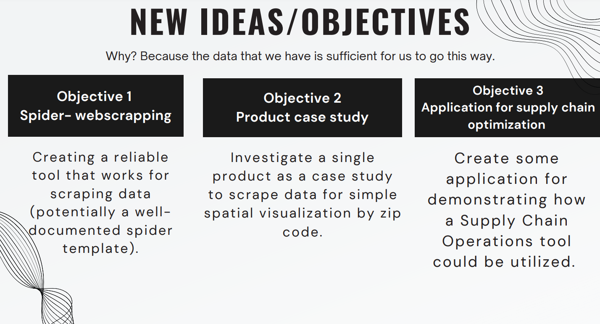
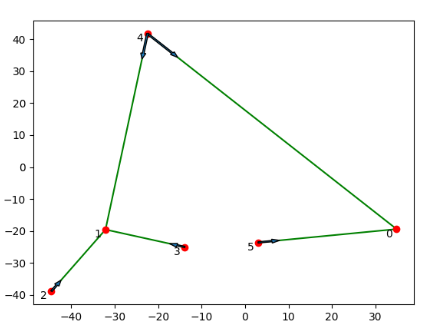
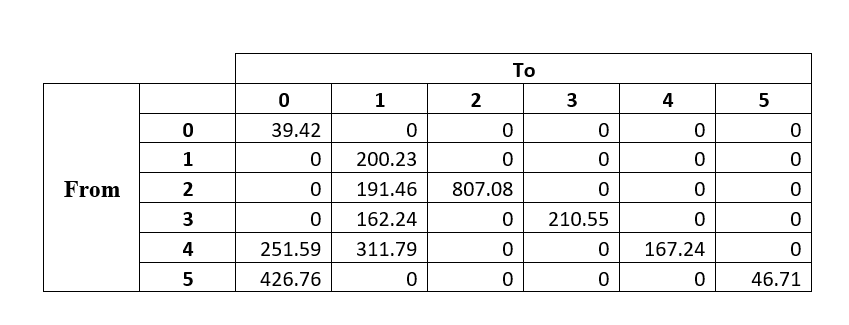
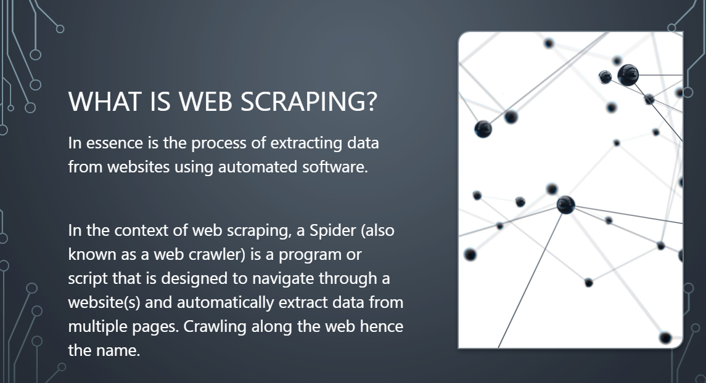
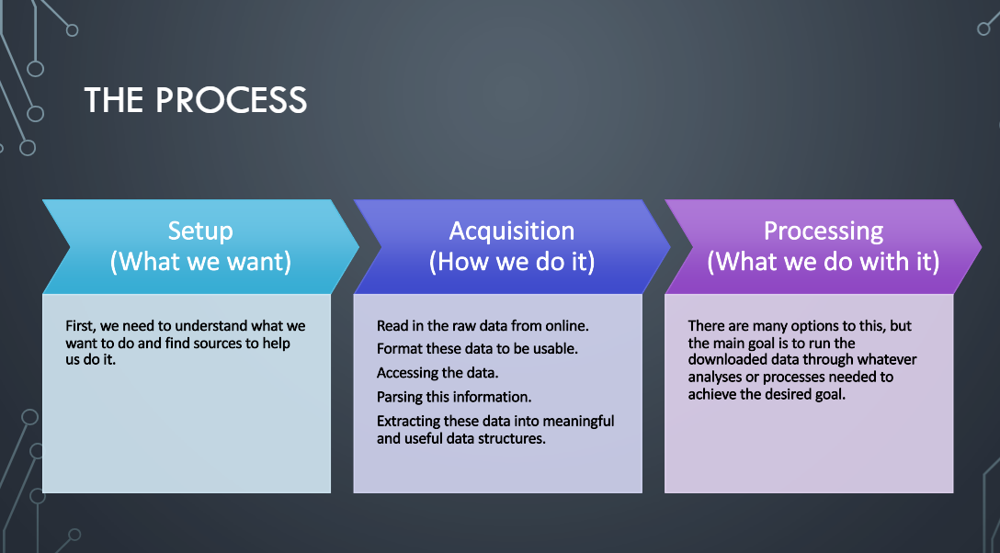
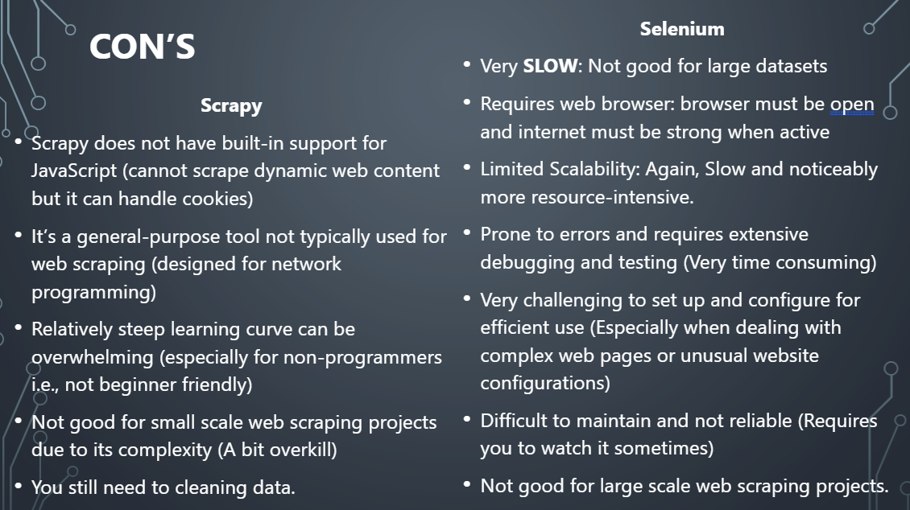
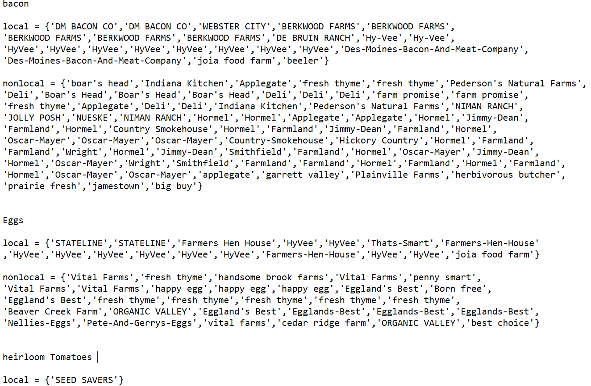

Monday and Tuesday (WINVEST Day)
On Monday of week six, DSPG conducted assessments of houses in Grundy Center and New Hampton by taking pictures and tracking their characteristics using the Fulcrum app. We then continued our evaluations in Independence on Tuesday, which marked the conclusion of our WINVEST site assessments.
During the assessments, we meticulously examined the houses’ structural features and recorded detailed notes on the condition of the driveway, foundation, gutters, paint, porch, roof, siding, walls, and window frames, as well as any other noteworthy features that were in poor condition.
We also took into account the condition of the lot, noting any junk or debris present on the site. Additionally, we evaluated the sidewalk connecting to the house and made note of its condition.
We paid extra close attention to the gutters, roof, siding, and landscape, assessing whether they were in good, fair, or poor condition. As we took and evaluated the pictures, we meticulously noted any obstructions in the photo(s) taken, paying close attention to whether they were caused by overgrown vegetation (such as bushes or weeds), trees, electrical posts, cars, or any other obstructions.
Along with evaluation of the housing, we also took note of our general impressions of the block. We evaluated the neighborhood sidewalks, taking note of whether they were partial or only on one side, and if they had curb cuts for easy accessibility at intersections.
Additionally, we assessed the condition of the sidewalks, ranking them to determine if they were unsafe and in need of repair or replacement. We also assessed the condition of the street trees and evaluated their overall health, marking any that appeared to be in poor condition.
We took note of the presence and condition of street lights, paying special attention to the brightness and coverage of the lights. We also marked the location of any street signs for wayfinding. Additionally, we identified the type of storm drain, whether it was a ditch/swale, curb/gutter, or another type of system. Finally to document our observations, we took pictures of both sides of the street block, capturing any notable features or areas of concern.
Additionally, if we identified any flaws or damages in the sidewalk, we took pictures to document the issues.
Here are the comprehensive maps of our WINVEST site assessments, as well as a photo of a typical house that we would assess.
-02.png "Test Caption")
.png)
.png)
-01.png)
Other AddOns to the day
Me, Sadat and Harun discussed about the current progress of the project and came up with few other ideas.
A little bit about project discussion that we had:
Inventory
There is some cleaned data after web-scraping.
There are also uncleaned datasets in Box/GitHub
Each category has;
- Price, Weight, URL, Local/Not-Local, and Zip Code
Original Idea
Plot commodities by location to investigate price differences.
Answer whether the locality of a commodity affects its prices.
BRAINSTORMING SESSION ------------------------------------------------------------------
Some New Ideas
Supply Chain Operations / Commodity arbitrage.
Data collection is the major problem.
- Building a multi-purpose spider that can pull information for local food data collection part.
Final thoughts that we all came up with:
Creating a reliable tool that works for scraping data (potentially a well-documented spider template).
Investigate a single product as a case study to scrape data for simple spatial visualization by zip code.
Create some application for demonstrating how a Supply Chain Operations tool could be utilized.
Wednesday ( Client Meeting Day)
Had a Meeting with Courtney Long where we discussed further preceding of the project

Final thoughts after client meeting that we all agreed on:
A comprehensive map to showcase the prices of eggs and bacon across various counties using the collected data. This map serves as a valuable tool for identifying trends and patterns in pricing, as well as understanding customer preferences towards specific brands. Additionally, the map aids in the selection of suitable selling locations by considering crucial factors such as brand reputation, pricing, and travel distance (cost).
A number of web-scrapping spiders for selected websites to facilitate the creation of a comprehensive product database. These spiders will automate the process of data scraping, enabling repetitive and efficient collection of data.
Showcase the capability of the spiders with a specific crop example. The spiders will be utilized to extract data for one of the following six products: tomatoes (regardless of the type), carrots, lettuce, watermelon, eggplant, or leafy greens. This demonstration will effectively highlight the functionality and effectiveness of the spiders in retrieving the desired data.
Optimization of the crop flow, from the point of supply to the point of demand, that maximizes overall profit. We will explore the factors and methodology to estimate the demand and supply.
Optimization of the crop flow, from the point of supply to the point of demand:

The red points represent the counties.
The green lines represent the flow of crops, and the blue arrow shows the direction of the flow.

Current issues that will be resolved:
The supply is greater than the demand.
Minimizing the traveling distance rather than maximizing the profit.
Considered random points as counties instead of the original location of each county.
The following might be included in the project:
A separate account of fresh and not fresh products.
Consideration of each individual farmer’s profit.
At the end of the day, we all discussed and listed down all the project’s output that we plan to produce at the end of this project.
.png)
Thursday
We started our day with coffee talk which was done and presented by Aaron. Aaron spoke about web scraping, specifically spiders in web scraping.


The above and below pictures shows a glimpse of what was presented in coffee talk.

Work In Progress… 
We are almost to the end of cleaning all the spiders. Data that we collected from grocers list is almost cleaned and now we are moving ahead with the data that we collected from local farms and CSAs. A snapshot of how we are cleaning and adding “local” column to the final data set can be seen below:

“Hyvee” spider is still being worked on and the code is on the run. A small part of the code can be seen below:
from DSPG_Products import Products #Imports the products
from DSPG_SpiderErrors import DataCleanerError
from DSPG_SpiderErrors import BrandingError
from DSPG_SpiderErrors import StringValueExtractionError
from DSPG_SpiderErrors import DebugError
from datetime import datetime
#This is a helper class to reduce duplicate code in the DataCleaner class
class DataCleaner():
def __init__(self):
self.getLocalBrands = [
#Bacon
{'desmoinesbaconandmeatcompany', 'desmoinesbaconco','berkwoodfarms', 'joiagoodfarm', 'beeler', 'dmbaconco', 'prairiefresh', 'webstercity', 'hyvee', 'hickorycountry'},
#Eggs
{'farmershenhouse', 'cedarridgefarm', 'joiafoodfarm', 'thatssmart', 'hyvee', 'beavercreekfarm'},
#Heirloom Tomatoes
{'seedsavers'}
]
self.getNonLocalBrands = [
#Bacon
{'jollyposh', 'farmland', 'countrysmokehouse', 'herbivorousbutcher', 'bigbuy', 'nimanranch', 'jimmydean', 'farmpromise', 'hormel', 'plainvillefarms', 'nueske', 'smithfield', 'applegate', 'garrettvalley', 'pedersonsnaturalfarms', 'indianakitchen', 'freshthyme', 'oscarmayer', 'jamestown', 'debruinranch', 'wright', 'boarshead'},
#Eggs
{'stateline', 'freshthyme', 'bornfree', 'handsomebrookfarm', 'handsomebrookfarms', 'egglandsbest', 'peteandgerryseggs', 'pennysmart', 'bestchoice', 'nellies', 'vitalfarms', 'organicvalley', 'happyegg'},
#Heirloom Tomatoes
{'organicvalley', 'delcabo'}
]
self.getBrandNames = [
#Bacon
{'Des moines bacon & meat company','Jimmy dean', 'Oscar mayer', 'Jolly posh','Webster city', 'Prairie fresh', 'Des-moines-bacon-and-meat-company', "Boar's head", 'Fresh thyme', 'Country-smokehouse', 'Farm promise', 'Hormel', 'Oscar-mayer', 'Smithfield', 'Farmland', 'De bruin ranch', 'Indiana kitchen', "Pederson's natural farms", 'Des moines bacon co', 'Applegate', 'Country smokehouse', 'Niman ranch', 'Jolly posh', 'Berkwood farms', 'Hyvee', 'Jimmy-dean', 'Dm bacon co', 'Herbivorous butcher', 'Hickory country', 'Hy-vee', 'Beeler', 'Joia food farm', 'Garrett valley', 'Deli', 'Jamestown', 'Plainville farms', 'Big buy', 'Nueske', 'Wright'},
#Eggs
{"That's smart", "Egglands best", "Pete and gerry's eggs" ,"Nellie's", "Eggland's best", 'Handsome brook farm', 'Egglands-best', 'Farmers hen house', 'Handsome brook farms', 'Joia food farm', 'Penny smart', 'Fresh thyme', 'Vital farms', 'Best choice', 'Nellies-eggs', 'Organic valley', 'Cedar ridge farm', 'Happy egg', 'Thats-smart', 'Pete-and-gerrys-eggs', 'Farmers-hen-house', 'Beaver creek farm', 'Born free', 'Stateline', 'Hyvee', 'Hy-vee'},
#Heirloom Tomatoes
{'Del cabo', 'Seed savers', 'Organic valley'}
]
def LoadDataSet(self, inputIndex, url):
self.productIndex = inputIndex
if inputIndex == 0:
self.Data = {'Product Type': None,
'Current Price': None,
'Orignal Price': None,
'Weight in lbs': None,
'True Weight': None,
'Brand': None,
'Local': None,
'Address': None,
'State': None,
'City': None,
'Zip Code': None,
'Date Collected': str(datetime(datetime.today().year, datetime.today().month, datetime.today().day))[:-9],
'Url': url
}
elif inputIndex == 1:
self.Data = {'Product Type': None,
'Current Price': None,
'Orignal Price': None,
'Amount in dz': None,
'True Amount': None,
'Brand': None,
'Local': None,
'Address': None,
'State': None,
'City': None,
'Zip Code': None,
'Date Collected': str(datetime(datetime.today().year, datetime.today().month, datetime.today().day))[:-9],
'Url': url
}
elif inputIndex == 2:
self.Data = {'Product Type': None,
'Current Price': None,
'Orignal Price': None,
'Weight in lbs': None,
'True Weight': None,
'Brand': None,
'Organic': None,
'Local': None,
'Address': None,
'State': None,
'City': None,
'Zip Code': None,
'Date Collected': str(datetime(datetime.today().year, datetime.today().month, datetime.today().day))[:-9],
'Url': url
}
else:
raise DataCleanerError(inputIndex)
def cleanPricing(self):
price = ''.join(c for c in self.Data['Current Price'] if c.isdigit() or c == '.')
if len(price) == 0:
return
self.Data['Current Price'] = float(price)
if self.Data['Orignal Price'] == None:
self.Data['Orignal Price'] = self.Data['Current Price']
return
price = ''.join(c for c in self.Data['Orignal Price'] if c.isdigit() or c == '.')
if len(price) == 0:
self.Data['Orignal Price'] = self.Data['Current Price']
else:
self.Data['Orignal Price'] = float(price)
def baconModifications(self):
#Finds True Weight if not available
if(self.Data['True Weight'] == None):
self.Data['True Weight'] = self.findWeight()
#Sets the Weight in lbs if possible
if(self.Data['True Weight'] != None):
self.Data['Weight in lbs'] = self.ozToLb(self.Data['True Weight'])
def ozToLb(self, input):
if input == None:
return None
weight = str(input).lower()
if 'oz' in weight:
return self.stringValueExtraction(weight, 'oz') / 16.0
elif 'lbs' in weight:
return self.stringValueExtraction(weight, 'lb')
elif '/lb' in weight:
return 1.0
elif 'lb' in weight:
return self.stringValueExtraction(weight, 'lb')
return None
#If no weight is given we look at other places that could have what we need
#This Determines if a list talking about weights in ounces or pounds.
def findWeight(self):
#Checking these places for clues
checkLocations = [self.Data['Current Price'], self.Data['Product Type'], self.Data['Orignal Price']]
possible = []
for string in checkLocations:
if string == None:
continue
string = string.lower().replace(' ', '') # convert to lowercase and remove spaces
if 'pound' in string:
return f"{self.stringValueExtraction(string, 'pound')} lb"
elif 'ounce' in string:
return f"{self.stringValueExtraction(string, 'ounce')} oz"
elif 'lbs' in string:
return f"{self.stringValueExtraction(string, 'lbs')} lb"
elif '/lb' in string:
return f"{self.stringValueExtraction(string, '/lb')}/lb"
elif 'lb' in string:
return f"{self.stringValueExtraction(string, 'lb')} lb"
elif 'oz' in string:
return f"{self.stringValueExtraction(string, 'oz')} oz"
elif '/ea' in string:
#This is the worst outcome so we want to append it to a list for later
possible.append(f"{self.stringValueExtraction(string, '/ea')}/ea")
return next((item for item in possible if item is not None), None)
#Heirloom tomatoes are tricky
def heirloomTomatoesModifications(self, weight):
#We can extract Organic from the name
if self.Data['Organic'] == None:
if 'organic' in self.Data['Product Type'].lower().replace(' ', ''): # convert to lowercase and remove spaces
self.Data['Organic'] = 'Organic'
#This part is for Weight
if self.Data['True Weight'] != None:
self.Data['Weight in lbs'] = self.ozToLb(self.Data['True Weight'])
return
if weight == None:
string = self.findWeight()
if '/lb' in string.lower().replace(' ', ''):
self.Data['True Weight'] = string
self.Data['Weight in lbs'] = 1.0
return
else:
self.Data['True Weight'] = string
else:
self.Data['True Weight'] = weight
self.Data['Weight in lbs'] = self.ozToLb(self.Data['True Weight'])
#Helper to reduce code. Splits the string and returns the float value
def stringValueExtraction(self, string, stringType):
if string == None or stringType == None:
raise StringValueExtractionError (string, stringType)
value = ''
stringList = []
for string in string.split(stringType):
for c in string:
if c.isdigit() or c == '.':
value += c
elif value:
stringList.append(float(value))
value = ''
if value:
stringList.append(float(value))
return stringList[-1] if stringList else None
#Eggs don't have weight so we use amount
def eggModifications(self):
if self.Data['True Amount'] == None:
checkLocations = [self.Data['Product Type'], self.Data['Current Price'], self.Data['Orignal Price']]
for string in checkLocations:
if string == None:
continue
string = string.lower().replace(' ', '') # convert to lowercase and remove spaces
if 'dozen' in string:
amount = self.stringValueExtraction(string, 'dozen')
if amount == None:
self.Data['True Amount'] = f"{1} dz"
self.Data['Amount in dz'] = 1.0
return
self.Data['True Amount'] = f"{amount} dz"
self.Data['Amount in dz'] = amount
return
if 'dz' in string:
amount = self.stringValueExtraction(string, 'dz')
self.Data['True Amount'] = f"{amount} dz"
self.Data['Amount in dz'] = amount
return
if 'ct' in string:
amount = self.stringValueExtraction(string, 'ct')
self.Data['True Amount'] = f"{amount} ct"
self.Data['Amount in dz'] = amount / 12
return
if 'ea' in string:
amount = self.stringValueExtraction(string, 'ea')
self.Data['True Amount'] = f"{amount} ea"
self.Data['Amount in dz'] = amount / 12
return
if 'pk' in string:
amount = self.stringValueExtraction(string, 'pk')
self.Data['True Amount'] = f"{amount} pk"
self.Data['Amount in dz'] = amount / 12
return
else:
string = self.Data['True Amount'].lower().replace(' ', '')
if 'dozen' in string:
amount = self.stringValueExtraction(string, 'dozen')
if amount == None:
self.Data['Amount in dz'] = 1.0
return
self.Data['Amount in dz'] = amount
elif 'dz' in string:
self.Data['Amount in dz'] = self.stringValueExtraction(string, 'dz')
elif 'ct' in string:
self.Data['Amount in dz'] = self.stringValueExtraction(string, 'ct') / 12
elif 'ea' in string:
self.Data['Amount in dz'] = self.stringValueExtraction(string, 'ea') / 12
elif 'pk' in string:
self.Data['Amount in dz'] = self.stringValueExtraction(string, 'pk') / 12
elif 'pack' in string:
self.Data['Amount in dz'] = self.stringValueExtraction(string, 'pack') / 12
def determineLocality(self):
try:
if self.Data['Brand'] == None:
#Formats the name
name = ' '.join(self.Data['Product Type'].split()).lower() # remove extra spaces
name = ''.join(c for c in name if c.isalpha() or c == "'" or c == " " or c == "-" or c == "&") # keep only letters, apostrophes, hyphens, and spaces and capitalize the first letter
name = name.capitalize()
brand = ''
for b in self.getBrandNames[self.productIndex]:
if b in name and len(b) > len(brand):
brand = b
self.Data['Brand'] = brand
else:
self.Data['Brand'] = self.Data['Brand'].lower().capitalize()
#Converts the brand into something we can quickly compair
brand = ''.join(c for c in self.Data['Brand'] if c.isalpha()).lower()
#Determins locality
if brand in {'deli'}:
self.Data['Local'] = "Can't be Determined"
elif brand in self.getLocalBrands[self.productIndex]:
self.Data['Local'] = "Local"
elif brand in self.getNonLocalBrands[self.productIndex]:
self.Data['Local'] = "Non-local"
else:
self.Data['Local'] = "None Listed"
if self.productIndex == 2: #Special condition for Heirloom Tomatoes
#Sometimes what we need is in the name
name = self.Data['Product Type'].lower().replace(' ', '')
if 'organic' in name:
self.Data['Organic'] = True
if 'local' in name: # convert to lowercase and remove spaces
self.Data['Local'] = 'Local'
except IndexError:
raise BrandingError(self.productIndex)
#Two Helper functions in case we need to add more brands to the loadBrands function above
#for the getBrandNames
# def CleanStringList(strings):
# cleaned = set()
# for s in strings:
# s = ''.join(c for c in s if c.isalpha()).lower() # keep only letters
# cleaned.add(s)
# print(list(cleaned))
# #for the getLocalBrands and getNonLocalBrands
# def CleanStringNames(strings):
# cleaned = set()
# for s in strings:
# name = ' '.join(s.split()).lower() # remove extra spaces
# name = ''.join(c for c in name if c.isalpha() or c == "'" or c == " " or c == "-").capitalize() # keep only letters, apostrophes, hyphens, and spaces and capitalize the first letter
# cleaned.add(name)
# print(list(cleaned)
)3.Hunt for more data on many other resources/websites provided by our client is going on.
These resources/websites come from a list that are currently purchasing or selling local food products for a Local Food Purchasing Assistance and Local Food to Schools Program.
-Prudent Produce
-Wheatsfield
-Field to Family
-Farm Table Delivery
-Organic Greens
-Iowa Food Cooperative
-Grinnell Farm to table
-All Seasons Harvest
-Farmers Hen House
-Early Morning Harvest
-Flint Ridge Cooperative
-Oneota Cooperative
Crop flow optimization model is still being worked on
.png)
Plan for the next week
We have next client meeting on 28th June 23, so we plan to complete the entire data cleaning process before that so that we can start with Data Analysis and modeling process.
- Planning on creating a teaser video for our project.
- We will start working on data Analysis and modelling which includes cleaning, exploring partitioning, modelling and projecting output from the final data set.
- Simultaneously, we plan look for more data that can be used for project.